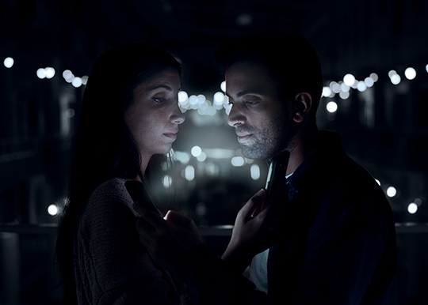

The Lovers 2.0
פרוייקט מסכם בקורסים מבוא לתקשורת חזותית ומבוא לעיצוב גרפי
מה עומד מאחורי העבודה?
במסגרת המטלה נתבקשנו לבחור יצירה מוכרת, לנתח אותה וליצור לה גרסה עם פרשנות משלנו. יחד עם יובל נתיב בחרתי ביצירה The Lovers של האמן רנה מגריט ויצרנו את הגרסה שלנו לפרשנות שמצאנו עבור היצירה.
